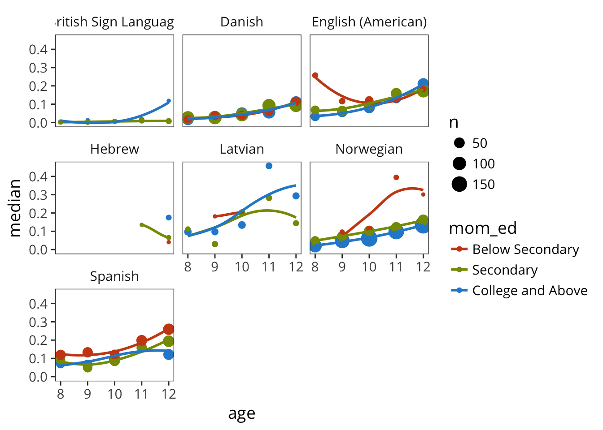

12 Individual Children
In an early report on individual differences in vocabulary acquisition, Nelson (1973) noticed that there was substantial variation in how many nouns
“referential” (more than 50% nouns) - more object-focused, found to be less syntactically complex - faster vocabulary growth “expressive” (less than 50% nouns) - more self-focused, more syntactically complex
structure and strategy, referential vs. expressive distinction
Bates et al. (1994)
Mayor and Plunkett (2014)
12.1 Variation in Production/Comprehension Tradeoffs
Example for English.

All languages.

Now consolidated across languages.

12.2 Variation in Vocabulary Composition
See Bates et al. (1994).
Start with WS.
Here is proportion nouns as a function of total vocab size.

Test Nelson (1973)’s suggestion that more referential is related to faster vocab growth. How do we do this? Well, one way of cashing out the relationship says that prop nouns should be a predictor of vocab size within language, over and above age?
Not sure about the model to use here. First, try linear model of proportions (wrong).

Now try glm over total outcomes.

Model is largely the same, more overconfident but harder to interpret.
In both cases, there’s clear support for Nelson (1973)’s R/E distinction in that kids with larger noun biases early tend also to have bigger vocabularies for their age.
This is true fro all languages except for Mandarin, which doesn’t show a noun bias at all. Interestingly, it’s true in Cantonese too. Odd.
On the other hand, that might just be a consequence of reverse causality: the bigger your vocabulary is, the bigger your noun bias on average, so you might just be picking up on the fact that kids with bigger vocabularies are showing the noun bias that would emerge later for every kid anyway.
One way to deal with this is to find out if a kid has a greater than vocabulary-size adjusted noun bias.
What that looks like:


OK, it’s a lot less obviously true that Rs have bigger vocabs than Es, at least by this analysis.
12.3 Vocabulary Composition and Syntactic Growth
12.4 Are there spurts in language growth
Brent & Siskind